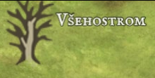

☰
Všehostrom
Elfové mají jeden výraz pro les, strom, hvozd a podobné útvary. To proto, že věří, že všechny tyto útvary jsou jen potomstvo Všehostromu, velkého stromu uprostřed Laréze, ve kterém žijí tisíce elfů a kolem kterého existuje celé elfské náboženství. Všehostrom je velký stovky metrů a šířkou přesahuje i některá lidská města. Věří se, že je zdrojem druidské magie a elfské spřízněnosti se zvířaty.
Dobrodružství, která se zde odehrála:


Všehostrom na mapě
Všehostrom